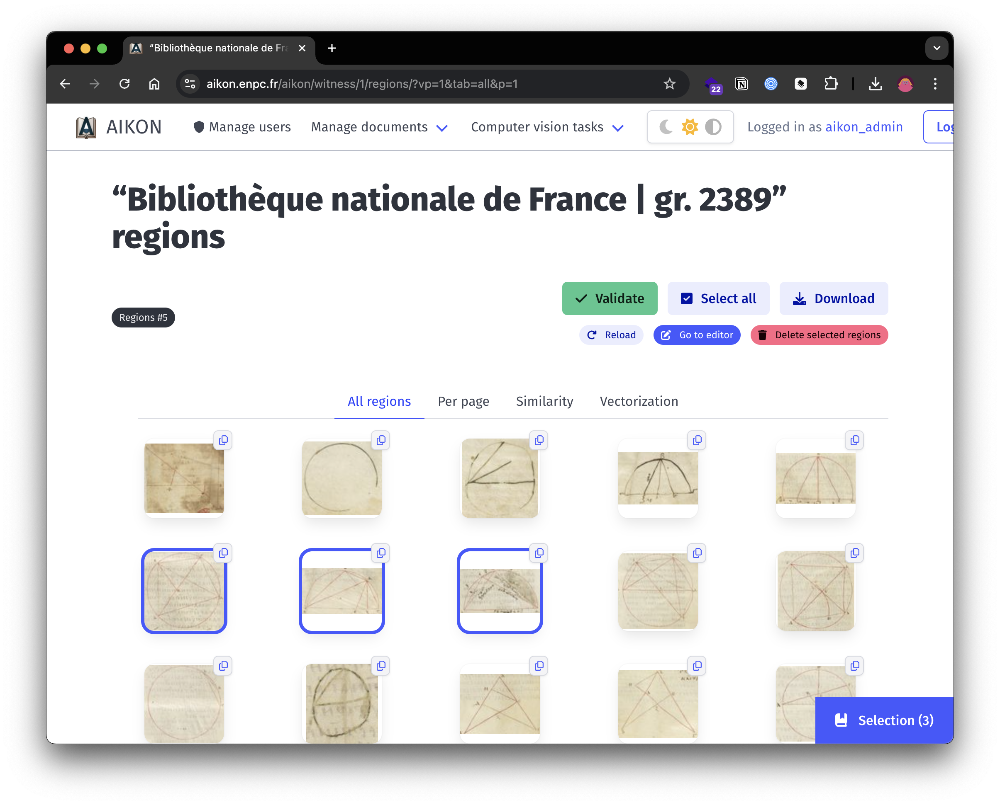

Aikon
Aikon
Aikon is a modular platform designed to empower humanities scholars in leveraging artificial intelligence and computer vision methods for analyzing large-scale heritage collections. It offers a user-friendly interface for visualizing, extracting, and analyzing illustrations from historical documents, fostering interdisciplinary collaboration and sustainability across digital humanities projects. Built on proven technologies and interoperable formats, Aikon's adaptable architecture supports projects involving visual materials.
Overview

At its core, Aikon allows researchers to describe their sources, import scans, request automatic processing, and manually refine results. Built on proven technologies and interoperable formats, including established standards such as IIIF, the platform's architecture supports a wide range of visual materials. Aikon's data model, centered around the concepts of Series, Witness, and Content, provides a flexible framework capable of describing diverse source materials while facilitating alignment across varied corpora.
The platform's modular structure enables easy integration of additional functionalities, with current applications including illustration extraction, similarity search, and vectorization. Aikon is not tied to any predetermined analysis methods; all stages can be performed manually or automated, with specialized models customizable to specific datasets. This approach ensures adaptability to various research needs while maintaining reproducibility. By fostering interdisciplinary collaboration and sustainability across digital humanities projects, Aikon aims to assist researchers to explore corpora at an unprecedented scale, helping bridging the gap between advanced computational methods and the nuanced requirements of humanities research.
Key Features
- Description and visualization of historical sources
- Custom AI models trained for heritage documents
- Automatic results exploration and edition
- Modular architecture for diverse research purposes
Collaborating Projects
EiDA
EdIter et analyser les Diagrammes astronomiques historiques avec l'intelligence Artificielle
ANR-22-CE38-0014Platform Interface
Get Involved
Explore the Aikon project and contribute to its development on GitHub .